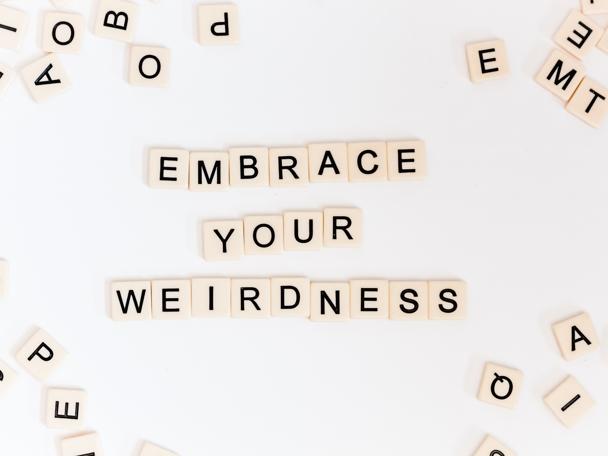

If other people do it, that means it’s right. Right? Fri, Apr 21
Hola 
How much of what you do is based on what others around you are doing?  There’s a hep word for it these days, influencers or as we know it, the bandwagon effect.
There’s a hep word for it these days, influencers or as we know it, the bandwagon effect. 
Your political ideology, your shopping choices, your stock investments, your holiday planning, your choice of school…
Consciously or unconsciously, we are influenced by the attitudes and behaviours of those around us. It can be your parents, boss, partner, friends, colleagues, public figure…
Most of us use the decisions of others as a mental shortcut to navigate our lives. 
“Civilization advances by extending the number of operations we can perform without thinking about them." Alfred North Whitehead
Just know what are the reasons for you following them, is it that you
-
Want to conform with others to gain their approval
-
Believe that relying on their opinion is beneficial
-
Are motivated by them

Photo by Sincerely Media on Unsplash
उसके थे जो सपने वही उसके थे अपने, ऐसा था Sindbad the Sailor
There’s no right or wrong here, just a thoughtful reflection on what social influence has on us. It may lead us to a greater awareness of ourselves and our relationships with others.
Social proof after all is a shortcut to deciding how to act. 
Love,
Walkover